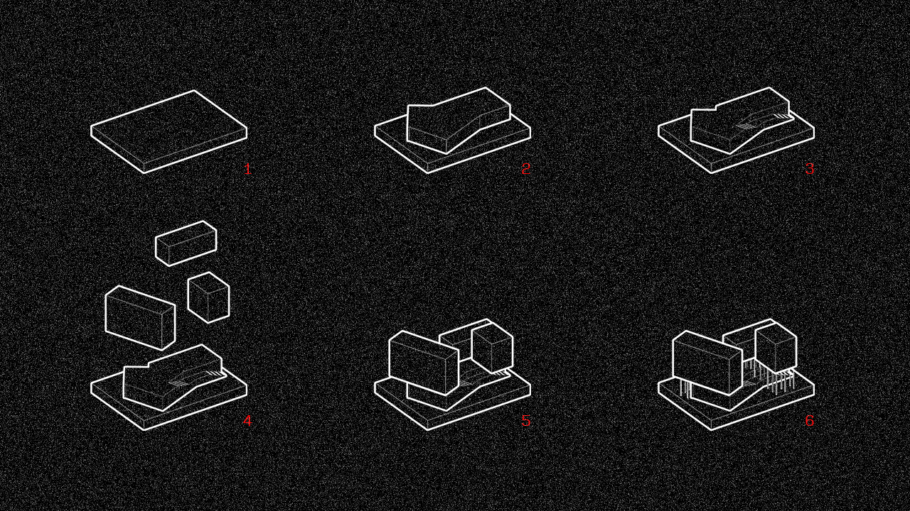

The building is divided into four distinct modules: commercial, residential, service, and semi-public. The commercial module, spanning the ground floor and the first floor, forms the foundation of the structure, serving as a public space and featuring wide external stairs leading to the upper levels of the complex. Above this ensemble, an elevated public patio was created, generating a transitional and communal space.
